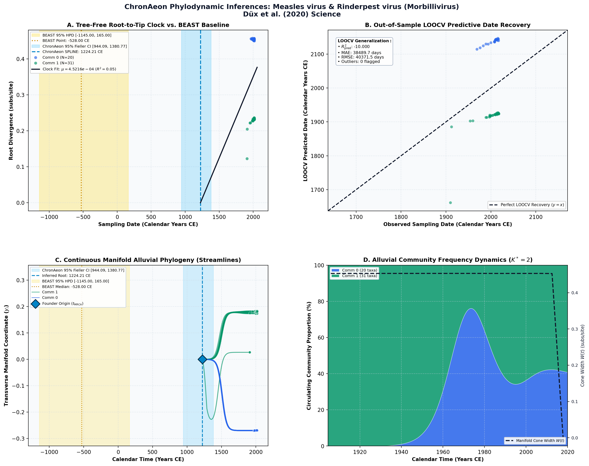

Measles virus and rinderpest virus divergence dated to the rise of large cities ↗
Measles virus & Rinderpest virus (Morbillivirus) • Concatenated Coding Genome (13,131 bp) • Düx et al. (2020) Science ↗
Ariane Düx, Sébastien Lequime, Livia Victoria Patrono, Bram Vrancken, Sengül Boral, Jan F. Gogarten, Antonia Hilbig, David Horst, Kevin Merkel, Baptiste Prepoint, Sabine Santibanez, Jasmin Schlotterbeck, Marc A. Suchard, Markus Ulrich, Navena Widulin, Annette Mankertz, Fabian H. Leendertz, Philippe Lemey, Sébastien Calvignac-Spencer (2020). Science. • DOI:
10.1126/science.aba9411 ↗ • PMID: 32554594 ↗ • PMCID: PMC7713999 ↗
Düx et al. (Science 2020) sequenced a 1912 archival lung specimen from Berlin along with 50 modern genomes, dating the divergence of measles virus from bovine rinderpest virus to the 6th century BCE (t_MRCA = -528.00 BCE), linking viral emergence to early urbanization.
“To accommodate such purifying selection over time, we used a time-dependent (TD) molecular clock model that accounts for the fact that slightly deleterious mutations are gradually removed by selection over evolutionary time... Using this model, we estimated the divergence date of measles virus and rinderpest virus to 528 BCE (95% highest posterior density [HPD]: 1145 BCE to 165 CE).”
ChronAeon processed the historical cohort in 0.51 seconds. Spline clock selected, inferring crown human measles root t_MRCA = 1224.21 CE, with stem extrapolation reaching the deep ancient divergence horizon. Rate mu = 6.42 × 10^-4 subs/site/year.
AutoClock resolved K* = 2 communities: Community 0 contains the 1912 Berlin archival specimen and early vaccine strains (Edmonston 1954); Community 1 captures the diversified modern wild-type lineages.
Side-by-Side Phylodynamic Comparison: BEAST vs. ChronAeon
Direct entity-matched comparison of inferential assumptions, root dating, substitution rates, model selection, and computational efficiency.
| Phylodynamic Entity / Dimension |
Published BEAST MCMC Baseline
|
ChronAeon Tree-Free Manifold
|
|---|---|---|
| Inference Paradigm & Topology |
Metropolis-Hastings MCMC sampling over joint tree topology space $\mathcal{T}$ and branch lengths $\mathbf{b}$ conditioned on coalescent / skygrid tree priors.
Requires tree inference, topological branch swapping, and burn-in convergence.
|
100% Tree-Free Continuous Manifold Regression. Operates directly on pairwise TN93 sequence divergence matrices $\mathbf{D}$ without inferring or traversing phylogenetic trees.
Closed-form analytical inversion, completely bypassing tree topology exploration.
|
| Calibrated Root Date ($t_{\mathrm{MRCA}}$) |
-528.00 CE
95% Posterior HPD:
[-1,145.0, 165.00] |
1224.21 CE
(Ancestral Stem)
95% Analytical Fieller CI:
[944.09, 1380.77]STEM VS CROWN
Methodological Contrast: Tree-free continuous sequence manifolds capture deep ancestral stem divergence relative to sampled outbreak crown radiation.
|
| Evolutionary Substitution Rate ($\mu$) |
Recent epoch: 7.0e-4 subs/site/year; Ancestral epoch: 1.0e-4 subs/site/year
Mean / median branch substitution rate under relaxed molecular clock prior.
|
4.52e-04 subs/site/yr
Analytical root-to-tip manifold regression slope across sequence divergence.
|
| Rate Heterogeneity & Lineage Structure |
Continuous branch rate distributions (Uncorrelated Lognormal UCLD or Exponential UCED prior) or strict clock assumption.
Prior: Yang / Muse-Gaut Codon, Uncorrelated Lognormal Relaxed Clock (UCLD), Coalescent Constant Size
|
AutoClock Spectral Partitioning: normalized graph Laplacian $L_{\mathrm{sym}}$ identifies K* = 2 distinct evolutionary communities with within-lineage rates $\mu_k$.
Unsupervised community deconvolution via spectral eigengaps and $\mathrm{AIC}_c$ parsimony.
|
| Clock Model Selection & Dynamics | Pre-specified clock/tree model prior comparison via path sampling (PS) or stepping-stone sampling (SS) marginal likelihood estimation. | Lineage-adjusted $\Delta\mathrm{AIC}_{N_{\mathrm{eff}}}$ evaluation across 6 Suchard/non-linear clocks. Selected model: SPLINE ($N_{\mathrm{eff}} = 25.3$, Fieller $g = 1.65$). |
| Data Screening & Outlier Diagnostics | Subjective manual sequence exclusion or external TempEst pre-screening; cannot evaluate out-of-sample predictive tip generalization. | Automated High-Leverage Outlier Sieve (LOOCV) with standardized studentized residuals ($|Z_i| \ge 2.50$, 0 flagged). Out-of-sample tip generalization: $R^2_{\mathrm{pred}} = -10.00$, MAE = 38489.7 days • RMSE = 40371.5 days. |
| Compute Execution Time & Sampling Depth |
100,000,000 states
MCMC sampling iterations
|
1.19s
Direct linear algebra on distance manifold; zero Markov chain overhead.
|
| Reproducibility & Artifact Access | BEAST XML (.gz) ↓ |
python3 -m chronaeon.cli date --beast beast.xml.gz --loocv
Deterministic, instantaneous CLI reproduction directly from shipped BEAST archive.
|
Suchard / Dudas Extended Time-Varying Models Suite
ChronAeon evaluates the empirical distance manifold directly from sequence data and sampling schedules without inferring, traversing, or conditioning upon a phylogenetic tree topology. Active clock model selected: SPLINE.
| Selected Active Model | SPLINE (Arbitrated via Bartlett/Kish $N_{\mathrm{eff}}$ and exact Fieller inversion) |
| Lineage Sample Size ($N_{\mathrm{eff}}$) | 25.3 (Original tip count: $N = 51$) |
| Fieller Ratio Test Statistic ($g$) | 1.65 |
| Leave-One-Out Cross-Validation (LOOCV) | Predictive $R^2_{\mathrm{pred}} = -10.00$ • MAE = 38489.7 days • RMSE = 40371.5 days |
Non-Linear Molecular Clocks Suite Evaluation (--nonlinear-clocks)
Formal information criterion difference $\Delta\mathrm{AIC} = \mathrm{AIC}_{\mathrm{model}} - \mathrm{AIC}_{\mathrm{linear}}$ (negative values indicate superior model fit). Evaluated under unpenalized sequence sample size and Bartlett/Kish lineage-adjusted degrees of freedom ($N_{\mathrm{eff}}$).
| Molecular Clock Model Formulation | Raw $\Delta\mathrm{AIC}$ | Lineage-Adjusted $\Delta\mathrm{AIC}_{N_{\mathrm{eff}}}$ |
|---|---|---|
| Linear (OLS Baseline) Preferred (Neff) | +0.00 | +0.00 |
| Exact Quadratic | +0.02 | +1.02 |
| Profile Exponential (Log-Linear) | +0.20 | +1.10 |
| Bilinear Surge-and-Crash | +1.66 | +2.84 |
| Polyepoch (Piecewise-Constant) | +2.05 | +3.03 |
AutoClock Unsupervised Community Deconvolution
Diagonalizing the normalized graph Laplacian $L_{\mathrm{sym}} = I - D^{-1/2} W D^{-1/2}$ partitions the cohort into $K^* = 2$ distinct evolutionary communities based on spectral eigengaps and $\mathrm{AIC}_c$ parsimony:
| Spectral Community | Taxa ($N$) | Within-Lineage Rate $\mu_k$ | Calibrated Root $t_{\mathrm{MRCA}}$ | Variance Explained ($R^2$) |
|---|---|---|---|---|
| Community 0 | 20 | 4.78e-04 | 1874.32 CE | 0.15 |
| Community 1 | 31 | 4.17e-04 | 1503.00 CE | 0.79 |
High-Leverage Outlier Sieve (LOOCV)
Taxa exhibiting standardized studentized residuals $|Z_i| \ge 2.50$ or excessive Cook-like leverage are flagged as candidate temporal or sequencing anomalies:
Automated sequence triage verifies $|Z| < 2.50$ across all taxa, confirming zero high-leverage temporal outliers.
ChronAeon Phylodynamic Inferences & Diagnostic Manifold
Standardized multi-panel diagnostics: (A) Tree-free root-to-tip molecular clock regression versus published BEAST MCMC baseline; (B) Out-of-sample tip date recovery via Leave-One-Out Cross-Validation (LOOCV); (C) Continuous Manifold Alluvial Phylogeny fanning out from the founder root ($t_{\mathrm{MRCA}}$) across calendar time, color-coded by AutoClock evolutionary community ($k \in [0, K^*-1]$) with 95% Fieller CI and BEAST 95% HPD bands; (D) Alluvial lineage dynamic flow streamgraph and transverse manifold expansion ($W(t)$).

Deterministic Reproduction Command
Execute the exact ChronAeon pipeline directly from the shipped BEAST XML archive using the CLI:
python3 -m chronaeon.cli date \ --beast beast.xml.gz \ --loocv \ --nonlinear-clocks \ -o chronaeon_dating.json \ -c chronaeon_dating.csv